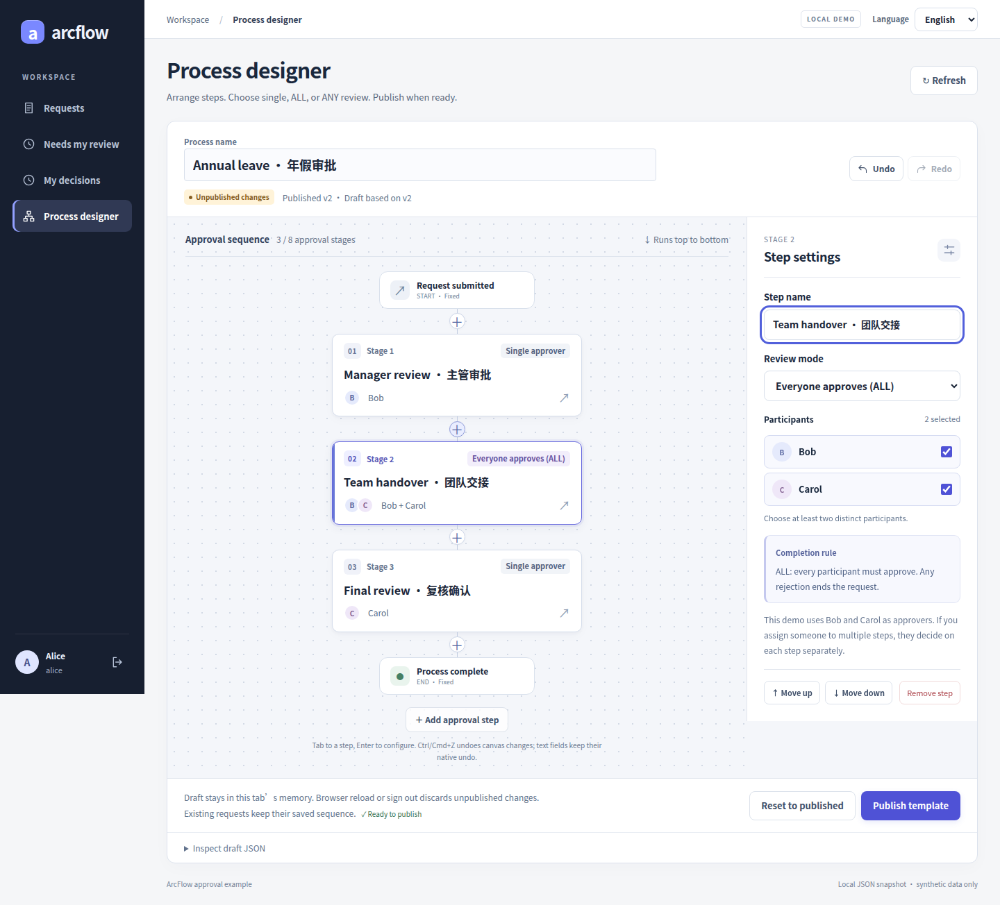
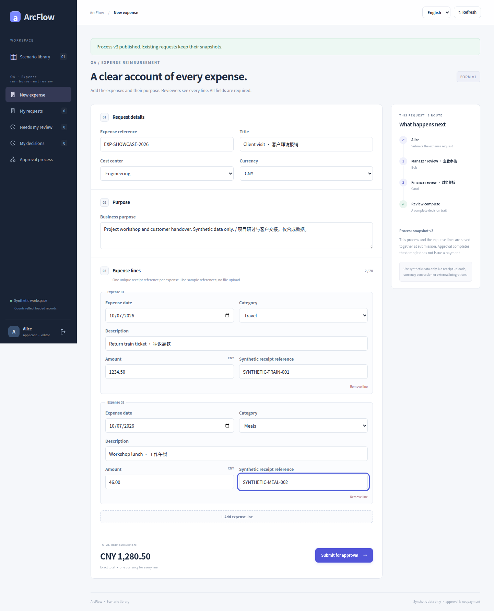
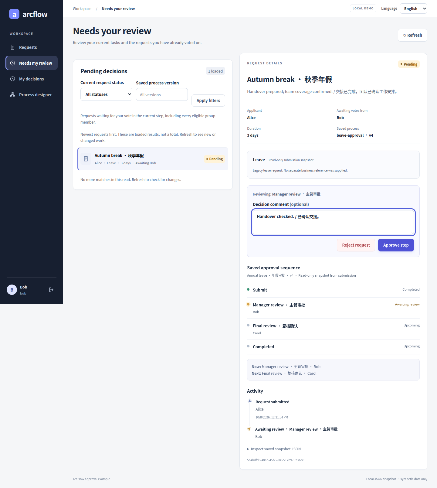
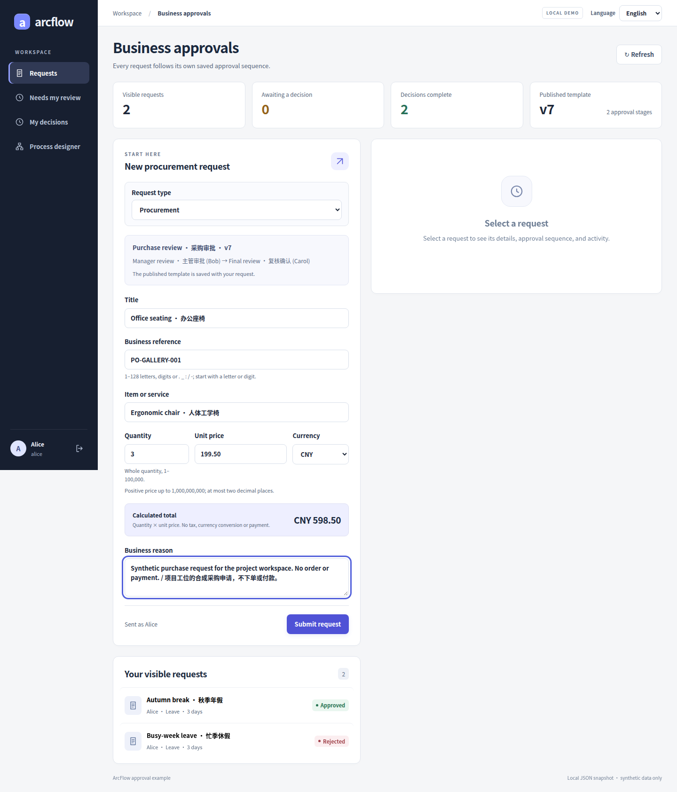
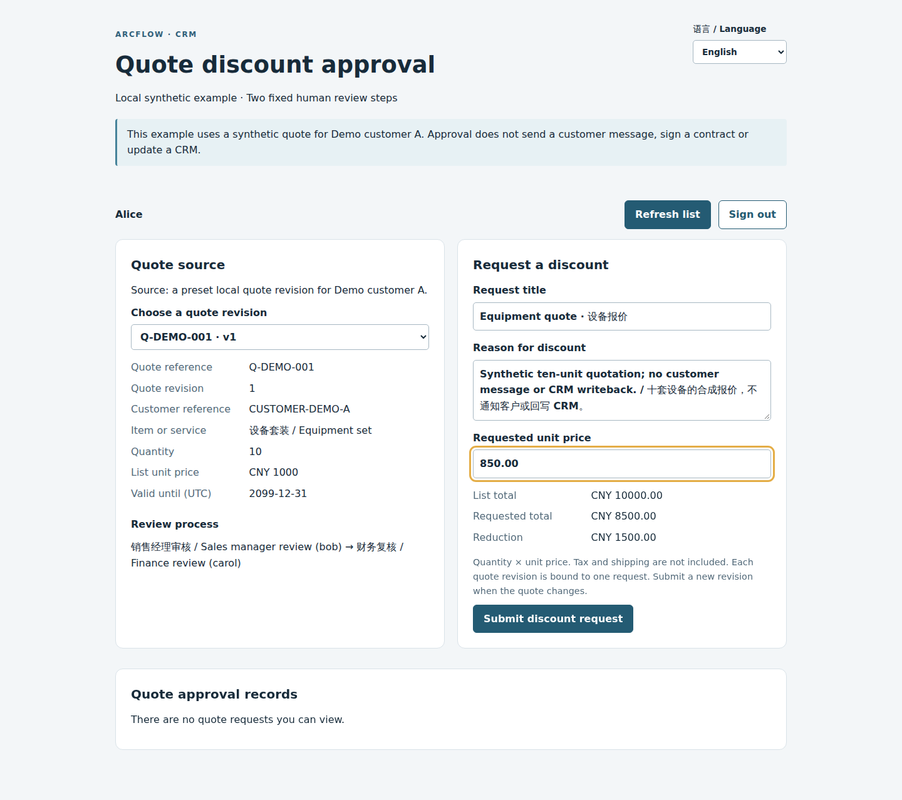

01 / ENGINE
Synchronous DAG engine
Runs handlers in dependency order, with variables and events. No third-party runtime dependencies in the core.
Does not manage human waits or persistent execution state.
OPEN SOURCE / JAVA WORKFLOWS
From the first step to the final decision.
Build on examples you can see, run, and understand.
Apache-2.0 · Source preview · Self-hosted examples
REAL INTERFACE / SYNTHETIC DEMO DATA
Choose a node, its reviewers, and an approval mode. Every request keeps the workflow it started with.

Set steps and SINGLE / ALL / ANY rules
Keep business and workflow snapshots
Record each participant’s decision
DESIGN THE PROCESS
Name the steps, choose the people, and publish. New requests use the new version. Existing requests keep the original.
Insert, remove, and move steps while keeping a clear sequence.
One reviewer, everyone agrees (ALL), or anyone agrees (ANY).
Publishing checks the expected version; requests preserve their steps, people, and rules.
Illustrative sequence · Not a general parallel gateway
START WITH YOUR BUSINESS
Explore four real interface examples here. Current main has nine business document types: leave, procurement and quotes use their own entry points, alongside six standalone scenario workspaces.
A cost center, currency, and 1–20 expense lines, saved alongside the approval process. Follow decisions and individual review records.
Receipt references are text, not uploads or validation. Approval never sends a payment. Not yet integrated with RuoYi or H5.
Read the scenario guide
Enter whole days and a reason. The current reviewer makes a decision before the next step begins. Inbox and records follow the active identity.
An approval example, without attendance calculations, leave balances, or automatic line-manager lookup.
Read the scenario guide
An item, quantity, unit price, and currency travel with the request. Business details and the workflow are preserved as submitted.
No automatic purchasing, payments, or inventory updates. The host business must handle the outcome.
Read the scenario guide
Compare a source quote with the requested price, then review through sales management and finance. Business read access and approval rights are checked separately.
Separate from the shared workspace. No live CRM connection, automatic quoting, customer notification, or business write-back.
Read the scenario guide
BUILT TO BE UNDERSTOOD
From a small Java engine to runnable host examples. See the dependencies, then choose the right layer for your application.
Runs handlers in dependency order, with variables and events. No third-party runtime dependencies in the core.
Does not manage human waits or persistent execution state.
Identity checks, sequential steps, snapshots, and history. JSON by default, with an optional JDBC adapter.
Has its own dependencies. JDBC needs explicit wiring and migrations.
Spring Boot, Vue, RuoYi, and H5 examples demonstrate different integration approaches.
Client coverage varies. Examples are not a production-readiness guarantee.
KNOW THE BOUNDARIES
Know the gaps before you integrate. Open source should make that easier, too.
Read the capability checklistSINGLE, ALL, ANY; workflow versions, request snapshots, and approval history.
Payment net totals, receiving exceptions and contract terms can select fixed approval steps. No scripts or general expression language.
Dynamic managers, withdrawal, reassignment, reminders, BPMN and automatic business writeback.
FROM SOURCE TO YOUR SCREEN
Start locally. Submit as Alice, approve as Bob, then review as Carol. Walk through the whole process first.
Linux / macOS / WSL · Git · Python 3.9+ · Full JDK 17+ · Maven 3.9+ · Node 22.22.2+ (22.x, with npm)
git clone https://github.com/JamesCube/ArcFlow.git
cd ArcFlow
git checkout 666ff64b280157e44a86f07a15fcb42f859ec11a
python3 scripts/tryout.py --check
python3 scripts/tryout.pyThe first run downloads dependencies. Wait for the ready URLs and read demo accounts from this run’s password file. Ctrl-C stops the services and deletes this run’s data. Use the manual setup guide if you need to retain data.
Full setup guideRead the code, run an example, share your use case.